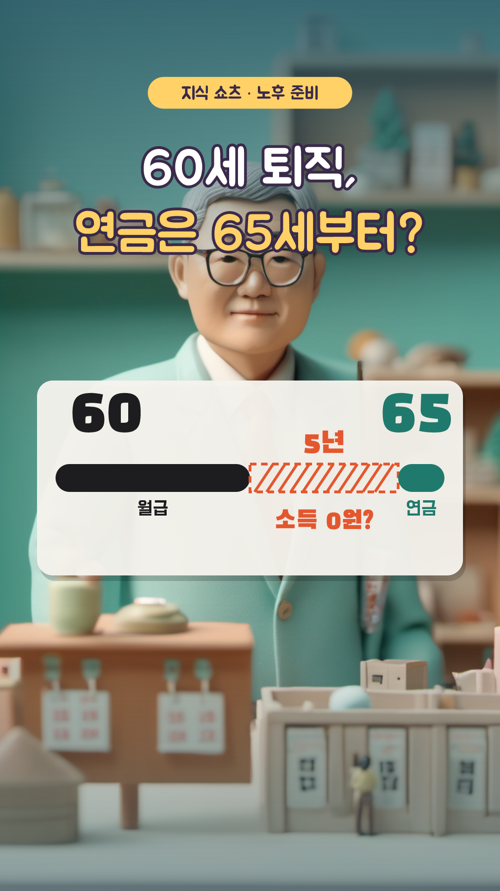
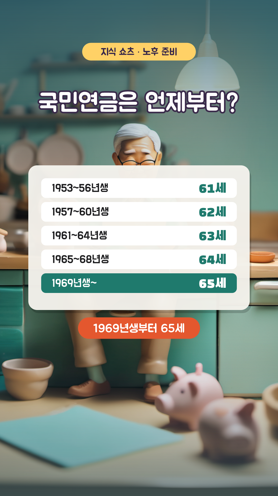
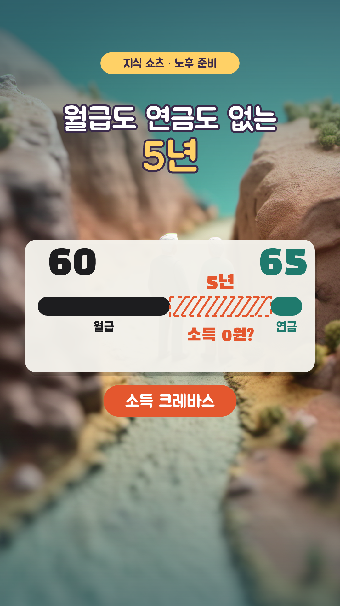
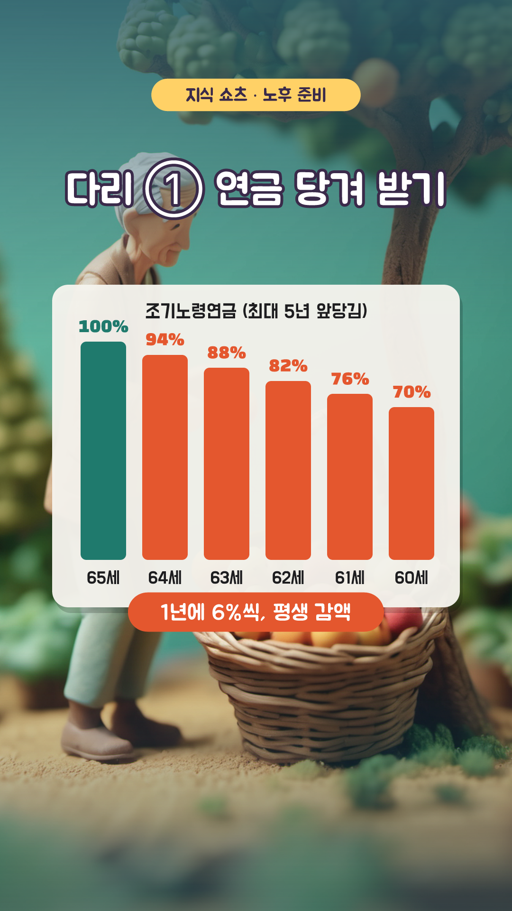
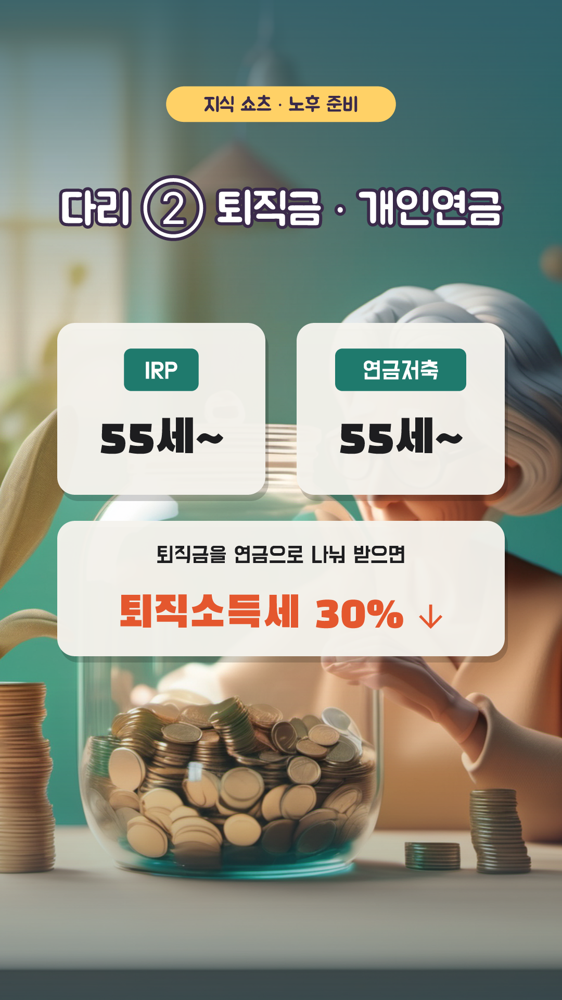
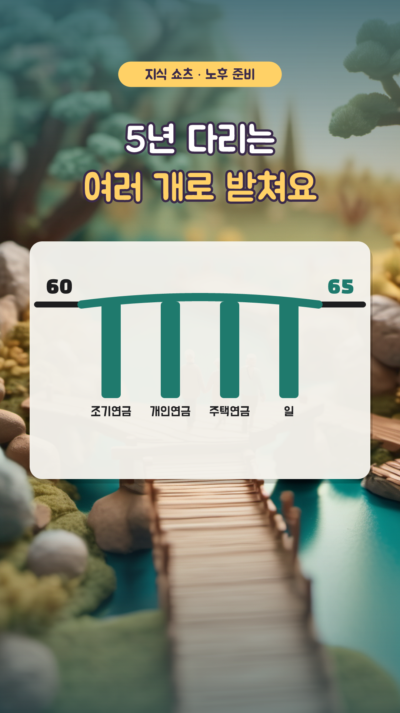
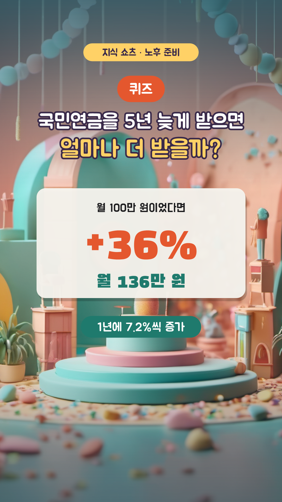

60세 퇴직, 연금은 65세? — 12컷 콘티
1분 30초 · 1080×1920 · 30fps · 자막 카드 y=1480 · 내레이션 ko-KR-Chirp3-HD-Charon · 지식 쇼츠 13편 · 3D 클레이 AI + 인포그래픽

S01
0:00–0:05 · 5초
모션
ai 카메라 이동 0.0s, title 팝 0.0s, gap 팝 2.4s
내레이션
60세 퇴직인데, 연금은 65세부터? / 그 사이 5년, 뭘로 살까요?
S02
0:05–0:12 · 7초
모션
ai 카메라 이동 0.0s, title 팝 0.0s, law 팝 0.5s, talk 아래에서 3.6s
내레이션
법으로 정한 정년은 지금도 60세예요 / 65세 연장은 논의 중이지만, 아직 정해지지 않았죠

S03
0:12–0:19 · 7초
모션
ai 카메라 이동 0.0s, title 팝 0.0s, table 와이프 ↓ 0.4s, hi 도장 3.6s
내레이션
그런데 국민연금은 1969년생부터 65세에 받아요 / 출생연도에 따라 61세에서 65세까지 달라요

S04
0:19–0:26 · 7초
모션
ai 카메라 이동 0.0s, title 팝 0.0s, gap 팝 0.5s, name 도장 3.6s
내레이션
월급은 끊기고 연금은 아직인 5년 / 이걸 소득 크레바스, 소득 절벽이라고 불러요
S05
0:26–0:33 · 7초
모션
ai 카메라 이동 0.0s, title 팝 0.0s, month 팝 0.4s, times 페이드 3.2s, total 도장 3.8s
내레이션
부부의 적정 생활비는 한 달 약 300만 원 / 5년이면 무려 1억 8천만 원이 필요해요

S06
0:33–0:41 · 8초
모션
ai 카메라 이동 0.0s, title 팝 0.0s, chart 팝 0.3s, bars 와이프 → 1.0s, cut 도장 4.4s
내레이션
첫 번째 다리, 연금 당겨 받기. 최대 5년 일찍 받을 수 있지만 / 1년에 6%씩, 최대 30%가 평생 깎여요

S07
0:41–0:48 · 7초
모션
ai 카메라 이동 0.0s, title 팝 0.0s, acct 팝 0.4s, tax 아래에서 3.6s
내레이션
두 번째 다리, 개인연금. IRP와 연금저축은 55세부터 / 퇴직금을 연금으로 나눠 받으면 퇴직소득세도 30% 줄어요
S08
0:48–0:55 · 7초
모션
ai 카메라 이동 0.0s, title 팝 0.0s, home 팝 0.4s, rule 페이드 1.2s, monthly 팝 3.6s
내레이션
세 번째 다리, 내 집. 주택연금은 55세부터 가입돼요 / 집에 살면서 매달 연금을 받는 거죠
S09
0:55–1:02 · 7초
모션
ai 카메라 이동 0.0s, title 팝 0.0s, work 팝 0.4s, why 아래에서 3.6s
내레이션
네 번째 다리, 일. 재취업이나 작은 일거리라도 / 버는 만큼 모아 둔 돈을 덜 꺼내 쓸 수 있어요

S10
1:02–1:10 · 8초
모션
ai 카메라 이동 0.0s, title 팝 0.0s, bridge 팝 0.4s, lit 와이프 → 3.8s
내레이션
5년 다리는 하나로는 부족해요 / 여러 개를 겹쳐서 튼튼하게 받쳐 주세요

S11
1:10–1:20 · 10초
모션
ai 카메라 이동 0.0s, badge 팝 0.0s, question 팝 0.3s, box 팝 0.8s, answer 도장 3.6s, why 페이드 6.6s
내레이션
퀴즈! 국민연금을 5년 늦게 받으면 얼마나 더 받을까? / 정답은 36%! / 1년에 7.2%씩 늘어나거든요
S12
1:20–1:30 · 10초
모션
ai 카메라 이동 0.0s, look 팝 0.2s, button 팝 4.8s, finger 탭 5.6s
내레이션
은퇴 준비는 5년 공백 메우기부터 / 더 많은 지식이 궁금하다면 구독해 주세요